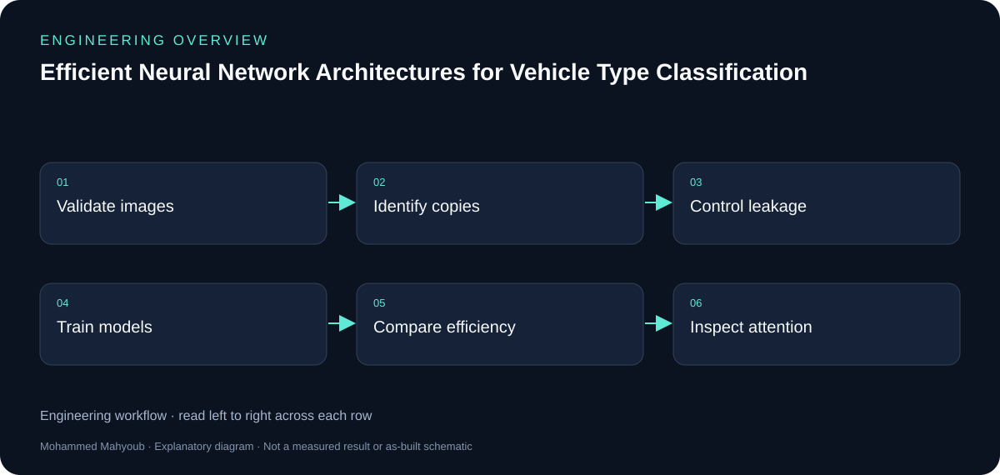

MSc Artificial Intelligence Research · Computer Vision · PyTorch
Efficient Neural Network Architectures for Vehicle Type Classification
Developed and evaluated neural network architectures for vehicle type classification using the VTID2 image dataset. The evaluated architectures included an MLP, a standard CNN, an efficient depthwise-separable CNN, and an efficient CNN with Squeeze-and-Excitation.
Academic Research — Code Private During Assessment
Research highlights
Source: public project summary. Efficiency and Macro-F1 comparisons refer to the efficient CNN against the standard CNN in the reported evaluation protocol.
System overview

Author
Mohammed Mahyoub
Problem
A content-based dataset audit identified 2,425 redundant exact copies among 4,356 valid images, leaving 1,931 exact-unique images.
Method
Compared conventional and leakage-controlled evaluation protocols, and examined the trade-off between classification performance and computational efficiency.
Result
The efficient CNN achieved substantial reductions in trainable parameters and MACs while maintaining competitive Macro-F1. Grad-CAM was used to analyse model attention and the influence of preprocessing and letterbox padding.
Engineering rationale
Data quality before accuracy
The content audit found 4,356 valid images, of which 2,425 were redundant exact copies. The remaining 1,931 exact-unique images make clear why evaluation design matters: copies can cross an image-level train/test boundary and inflate apparent generalisation.
Architecture comparison
The MLP establishes a non-convolutional baseline. A standard CNN is compared with a depthwise-separable CNN and a version with Squeeze-and-Excitation. The comparison considers Macro-F1 together with trainable parameters, multiply-accumulate operations and batch-one inference latency.
Interpretation of published results
The public LinkedIn summary reports 87.24% fewer parameters and 81.67% fewer MACs for the efficient CNN, with a mean Macro-F1 difference of 0.0150. Conventional and controlled protocols also differ in data composition and training settings; their performance gap is a diagnostic comparison, not a causal estimate of leakage.
Explainability and access
Grad-CAM investigates attention to vehicle regions and preprocessing padding. These public summaries do not release the assessment notebook, source code or private dataset artifacts. Code remains private during assessment.

Evidence and validation
Review the documented implementation against these validation topics; measured results are shown only where provided by the source.
- Duplicate audit and split identity checks
- Model/protocol configuration
- Classwise results and uncertainty
- Latency environment and Grad-CAM examples
Source gallery
Original implementation photographs and raw results were not available in the inspected public repository. The diagrams above explain the documented scope; they do not replace implementation evidence.